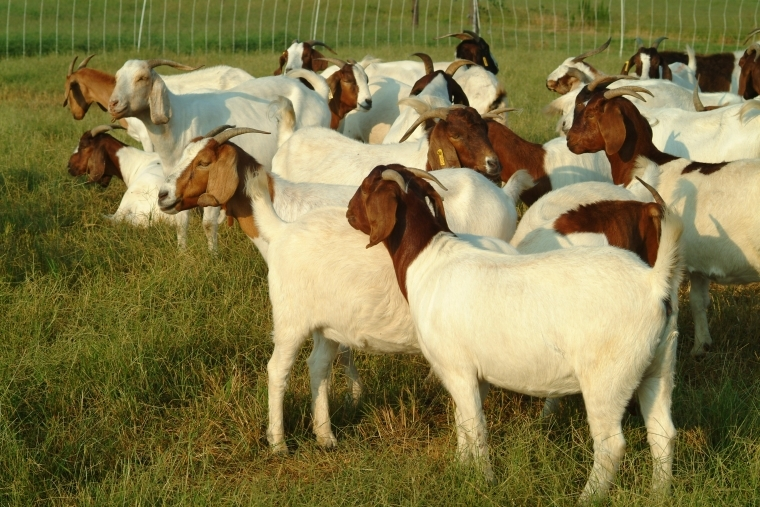
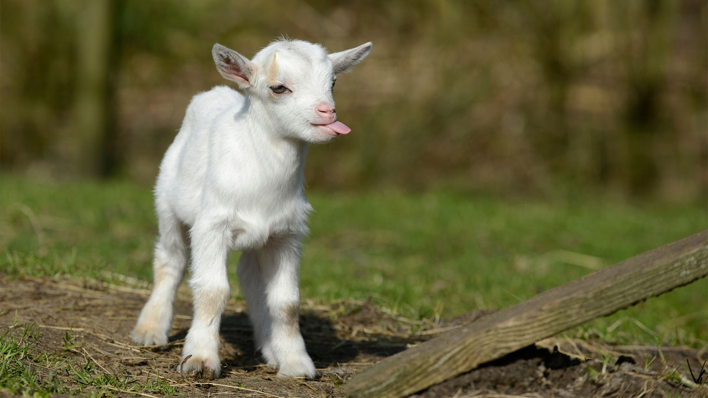
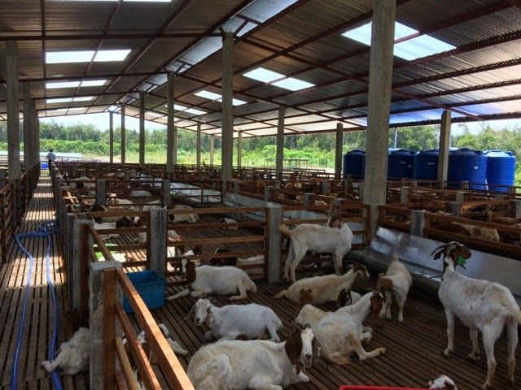

🐐 How Farmers Can Double Their Income Through Goat Rearing
In India, goat is called ‘Poor man’s cow’ and is an important component in dry land farming system. Marginal or undulating lands inappropriate for other types of animals such as cow or buffalo, goat is the best option. With very less investments goat rearing can be turned into a lucrative venture for small & marginal farmers.

🤹♂️ Goat Rearing
Goats are basically reared mainly for milk & meat. Goat is said to be a multi functional animal and plays a important role in the economy & nutrition of landless, small & marginal farmers in India. Goat farming is an enterprise that has been practiced by a large segment of population in rural areas. Goat can easily survive on available trees and shrubs in adverse harsh atmosphere in low fertility lands where no other crop can be cultivated.
Globally, more people drink goat milk as compared to cow milk and many people eat goat meat than beef etc. Historians said that goats were the very first animals to be domesticated. Since years, goats have been used for milk, meat, hair & skins all over the world.
🎀 Goat farming Advantages
Here are the benefits of goat rearing:
1. The initial investment required for Goat farming is quite low.
2. Because of small body size & docile nature, housing requirements & managemental problems with goats are less.
3. In drought prone areas, risk of goat farming is very low as compared to other animals.

4. Goats are prolific breeders & reach sexual maturity at the age of 10 to 12 months, gestation period is also short & at the age of 15 to 17 months it starts giving milk.
5. Goats are best for mixed species grazing. It can thrive well on wide range of thorny bushes, weeds, crop residues.
6. Goat meat is more lean i.e. low cholesterol & is relatively good for those who prefer low energy diet especially in summer.
7. Goat milk is also very easy to digest as compared to cow milk. Goat milk help in improving appetite & digestive efficiency.
8. They are 2.5 times more economical or cheaper than sheep on free range grazing under the semi arid conditions.
9. Goat provides employment to the rural poor besides effectively utilizing unpaid family labour.
🙆 How to start goat farming in India
🐐 Know about Different Goat breeds
There are many goat breeds available in the country but all of them are not suitable for commercial production. Some breeds of goat are highly productive and suitable for commercial farming in India.
1. Jamunapari goat
Jamunapari goats are mostly found in Uttar Pradesh and its surroundings areas, but nowadays they are available in many of the country and some other South Asian nations as well.
2. Malabari goat
They are also called Tellichery goats and mainly found in Southern state of Kerala.
3. Sirohi goat
Sirohi goats are found in Rajasthan and its surrounding regions.
4. Barbari goat
Barbari goats can be found in the regions of Uttar Pradesh, Haryana, Panipat, Karnal, Rothak and Delhi regions.
5. Beetal goat
They are mostly found in Punjab & Haryana.
6. Changthangi goat
These goats are known for their delicate fiber yield. They are mainly white in color and the rest are brown, black & gray.
7. Jakharana goat
Jakharana goats are important dairy goat breed of the semi-arid tract of the Rajasthan.
8. Chegu goat
They are mainly white in color, but grayish red & mixed colors can also be found.
9. Kanni Adu goat
Kanni Adu goats are mostly found in Tamil Nadu.
10. Kutchi Goat
Kutchi goats are also called Kathiawari goat and found in Gujarat.
🌳 Look for a Suitable Location
Almost all regions in India are suitable for goat farming. It is better to select a land for goat farming or goat rearing near your home. You can also look for a land that has all types of facilities for successful goat farming business.

⛪ Proper Housing
Housing is vital for commercial goat farming or goat rearing in India. But, many goat farmers in the country raise goats in small scale & keep them with other livestock/domestic animals like cow, buffalo or sheep. But this type of goat rearing does not give maximum production. Thus, for setting up commercial goat farm, farmers must build a dedicated goat housing system. These days, goat housing design with stall feeding system is quite popular and it ensures high production with good profit than other traditional systems.
🌾 Right Feeding
Goats can grow well & produce maximum if they are given well balanced & nutritious food. Always make sure availability of all types of essential ingredients in their food. Successful goat farmers add all types of essential vitamins, minerals, proteins and other necessary ingredients in proper ratio.
💊 Care & Management
Always take good care of your domestic animals including goats. Check all their activities regularly. Stock all types of required vaccines and medicines in your farm. This will help you in increasing productions from commercial goat farming. Always give them fresh & nutritious food with ample amount of green elements.
If you follow the above-mentioned steps carefully you will be able to earn a good income through goat farming.
📞 CONTACT US
Featured Posts

Agricultural facilities include facilities ranging from entire holdings to installations.

Indeed, at the close of the century of greatest agricultural expansion, the dilemma of the farmer had become a major problem.

On farms, IOT allows devices across a farm to measure all kinds of data remotely and provide this information to the farmer in real time.

Farming is a remarkable part of the economy in India, as it adds about 18 per cent of the absolute GDP.

“Do what you love to do, and be around things that make you smile.